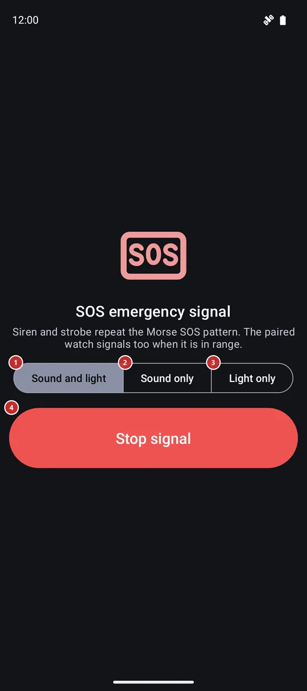

SOS emergency signal
What this is for
The SOS signal repeats the Morse SOS pattern - three short, three long, three short - with a loud siren, a flashing light, or both, so that people nearby can hear or see you. It only makes sound and light: it does not call anyone or send your location.

In this order
- Open SOS emergency signal from the programs menu, the programs panel or the SOS signal button on the Tourist screen. It is off after installation, so switch it on first in Settings, on the Management tab, in the group Additional programs and scenarios.
- The signal starts the moment the screen opens, in the mode you used last. The first time that is Sound and light, so expect a loud siren and a strobing light at once.
- To change what it does while it runs, press Sound and light 1, Sound only 2 or Light only 3. The new mode takes over immediately and is remembered for the next time.
- The siren, the rear flash and the flashing screen 5 all follow the same beat: three short, three long, three short, then a pause and again.
- You can leave the screen or let it turn off: the signal keeps going, and the notification 6 shows that it is active and offers Stop signal.
- Press Stop signal 4 to end it. Leaving the screen with the Back button or gesture ends it too. If you do nothing, it stops by itself after 30 minutes to save the battery and the flash.
- With a paired watch, starting or stopping the signal on the phone does the same on the watch. If the watch is out of range, each device signals on its own.
The elements
What it does
1Sound and lightSiren and strobe together, so you are heard and seen.
A loud siren plays together with the rear flash and the flashing screen, all on the Morse SOS beat. This is the default the first time. The siren uses the alarm sound channel, so it is heard even when the ringer is silenced. For as long as the signal runs, the alarm volume is raised as far as the phone allows, and it is put back when the signal ends.
2Sound onlyThe siren alone, for daylight or when a light would blind someone.
The torch and the screen stay dark, which saves the battery. The siren is the same loud one on the alarm channel, rising and falling so the ear does not tune it out.
3Light onlyThe strobe alone, for a quiet night or when sound would draw the wrong attention.
The rear flash and the white flashing screen follow the Morse beat with no sound. A phone without a flash unit still signals: the screen alone is the light. While the light is engaged, the window is raised to full brightness, never the brightness setting of the phone.
Stop and strobe
4Stop signalEnds the signal here and on the paired watch, and closes the screen.
It is the largest button on the screen on purpose, so it is easy to hit with cold or wet hands while the siren is loud. One press stops the siren, the flash and the strobe, asks the paired watch to stop as well and closes the screen. There is nothing to confirm. To signal again, open the screen again.
5Flashing screenA white flash across the whole screen on the beat of the signal.
In the modes with light, the whole screen flashes white on the same Morse beat as the rear flash. It makes the phone a light even where there is no flash unit, and it adds a second light where there is one. The flash is only a display: a touch goes through it to the buttons underneath, so Stop signal works while the screen is lit.
Outside the screen
6Signal notificationKeeps the signal in reach when the screen is closed or the phone is locked.
While the signal runs, a notification named SOS emergency signal shows the text Signal active with the mode and stays as an ongoing notification. The action Stop signal in it ends the signal at once, and a tap on the notification opens this screen again. The signal keeps going when the screen turns off or you switch to another app.